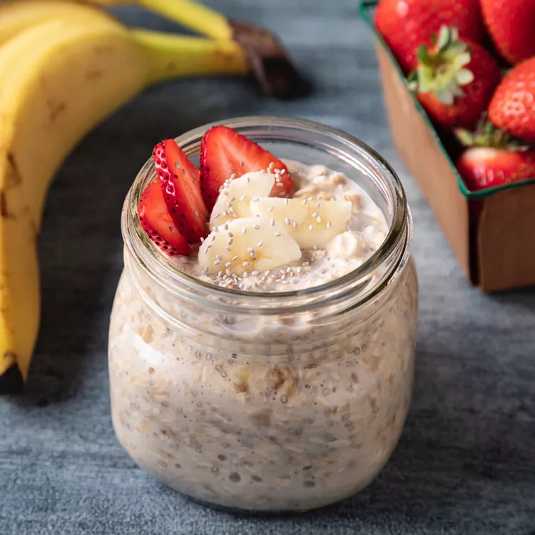

Overnight Chia Oats

Ingredients
- 1 cup Almond Milk
- 1/2 cup rolled oats
- 1/2 medium banana, mashed
- 1 tablespoon chia seeds
Directions
- Combine almond milk, oats, mashed banana, and chia seeds in a 1-pint jar.
Seal with a lid and shake well. Refrigerate 8 hours to overnight.